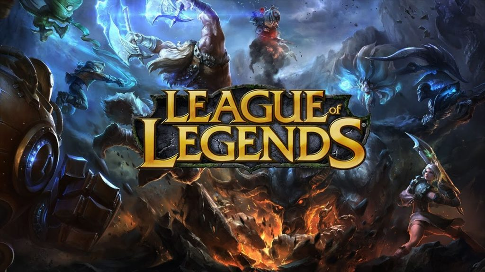
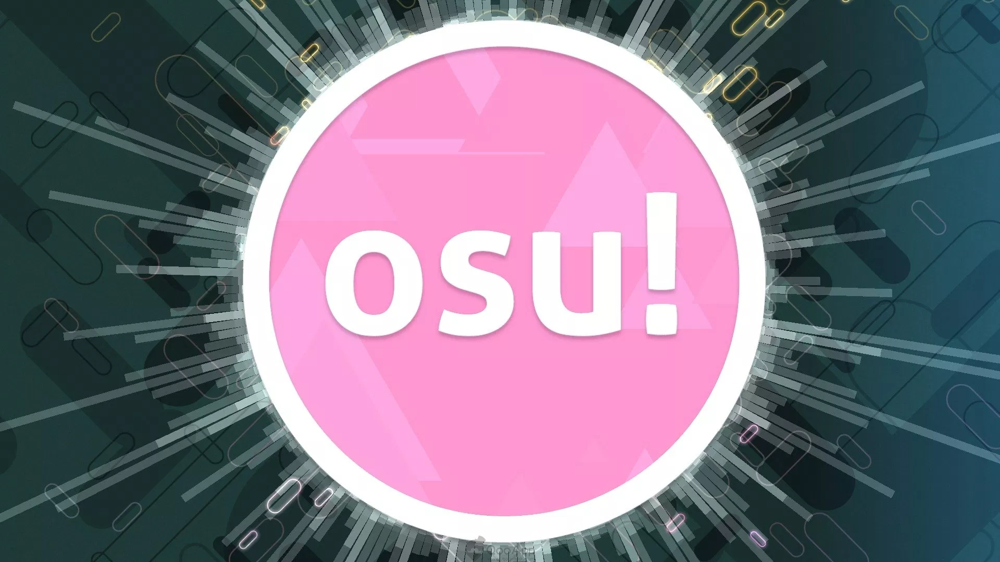
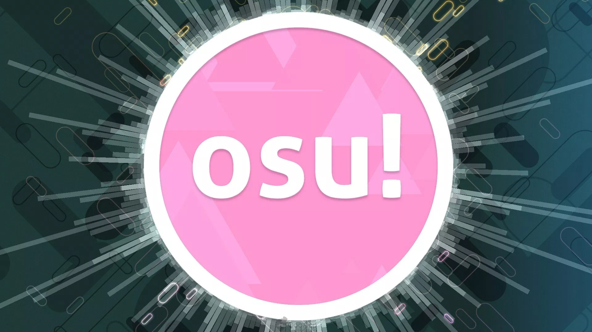
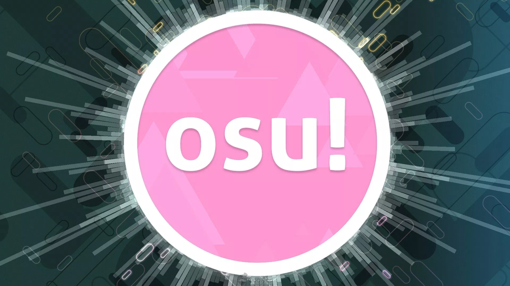
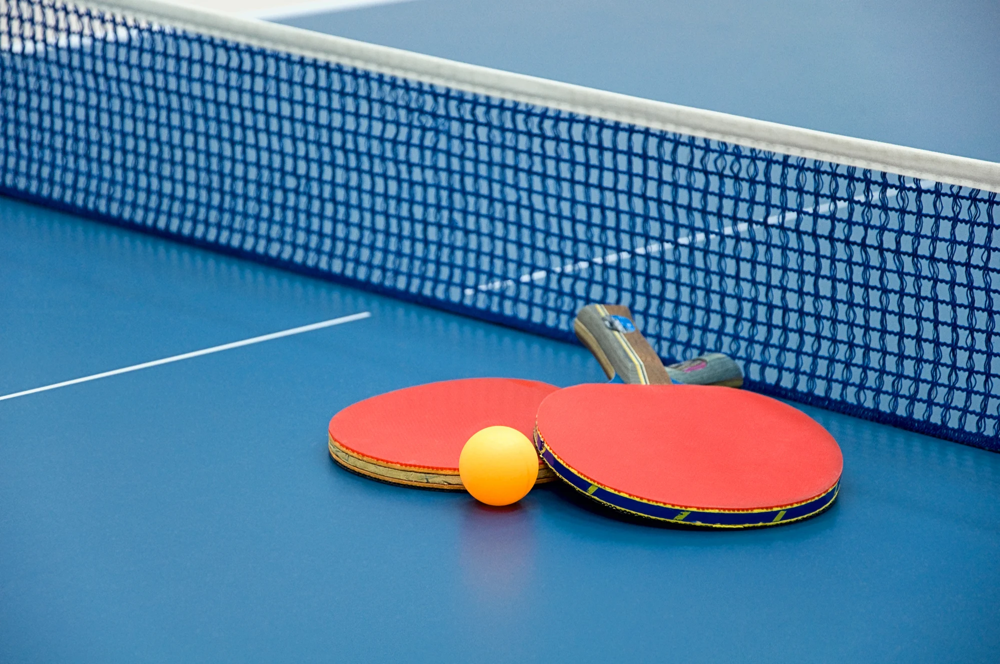
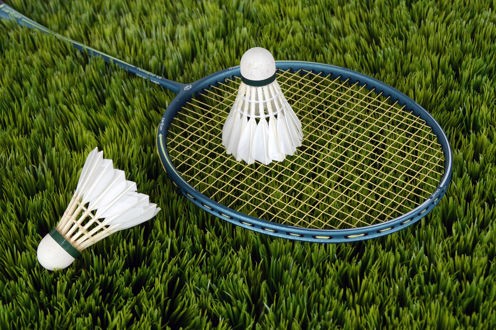
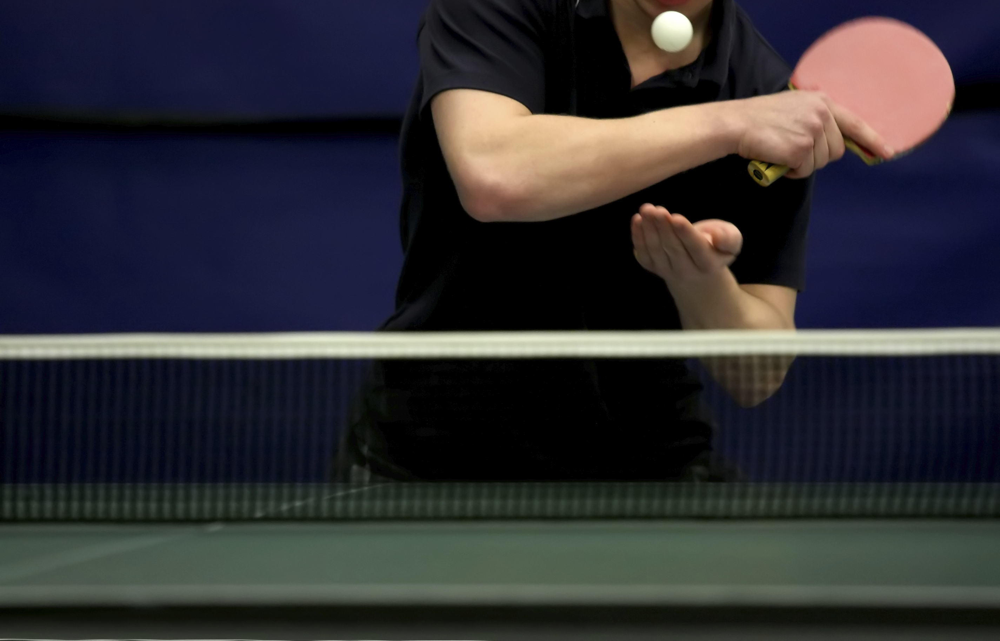

Gaming

 


Gaming is one of my favorite hobbies outside of coding. My three favorite games are League of Legends, Counter Strike Global Offensive, and Osu.
The game that I have played the longest for is League of Legends (LoL). I started playing LoL in middle school when I lived in the United States. I recall playing everyday with my friends as playing LoL with friends was what made the game so enjoyable. I took a long hiatus of about two to three years until I decided to return to the game to play with my friends in Taiwan. Ever since then, I have been playing frequently.
Counter Strike : Global Offensive (CSGO) is game that I have played for the second longest time. I started playing the game around my first year of highschool. I enjoy CSGO as a competitive game as it requires players to have a strong understanding of the game while knowing how to use certain weapons in certain situations. Due to the high skill nature of CSGO, I have spent many hours just learning how to use every weapon and learning how to play on different maps.
Osu is the most recent game that I have played. Osu is a unique rythmn game that requires the player to click to circles according to the song's rythmn. In addition to its unique game mechanics, the method to play is also interesting. Many players including me, use a tablet to control where the cursor is being aimed and use a keyboard to click the circle. Osu's unique nature as a rythmn game and growing community is what makes the game so enjoyable for me.
The game that I have played the longest for is League of Legends (LoL). I started playing LoL in middle school when I lived in the United States. I recall playing everyday with my friends as playing LoL with friends was what made the game so enjoyable. I took a long hiatus of about two to three years until I decided to return to the game to play with my friends in Taiwan. Ever since then, I have been playing frequently.
Counter Strike : Global Offensive (CSGO) is game that I have played for the second longest time. I started playing the game around my first year of highschool. I enjoy CSGO as a competitive game as it requires players to have a strong understanding of the game while knowing how to use certain weapons in certain situations. Due to the high skill nature of CSGO, I have spent many hours just learning how to use every weapon and learning how to play on different maps.
Osu is the most recent game that I have played. Osu is a unique rythmn game that requires the player to click to circles according to the song's rythmn. In addition to its unique game mechanics, the method to play is also interesting. Many players including me, use a tablet to control where the cursor is being aimed and use a keyboard to click the circle. Osu's unique nature as a rythmn game and growing community is what makes the game so enjoyable for me.
Table Tennis / Badminton



The first sport that I learned to play was badminton. I recall my dad sending me to badminton classes and teaching me the basics about how to hold a racket and hit the bird properly. At first I didn't like it, but soon I grew to enjoy the sport. Although I haven't properly played badminton for several years due to laziness, I still enjoy it whenever I have the time to play.
Table tennis was the second sport that I learned. My dad also hired a coach to teach me one on one to the point where the core fundamentals were drilled into me. I viewed table tennis similarly to badminton, at first I didn't enjoy it and did not see the point in trying to learn. However as time passed, I started to like the sport and enjoyed playing against my father every once in a while. What I enjoy most about table tennis is when you maintain a rythmn and hit the ball extremely fast back and forth.
Table tennis was the second sport that I learned. My dad also hired a coach to teach me one on one to the point where the core fundamentals were drilled into me. I viewed table tennis similarly to badminton, at first I didn't enjoy it and did not see the point in trying to learn. However as time passed, I started to like the sport and enjoyed playing against my father every once in a while. What I enjoy most about table tennis is when you maintain a rythmn and hit the ball extremely fast back and forth.
Anime